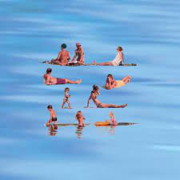
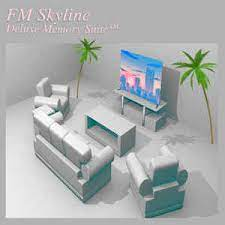

| Video Name | Discription | Length | Album Cover> |
|---|---|---|---|
| We're Finally Landing | My favorite song by Home. Album: Before the Night | 4:32 | |
| Livin' Loose | Easily my favorite track by George Clanton. Album: Slide | 5:49 | |
| Camp Night | Another great vaporwave song. Album: St. Francis | 2:21 |  |
| Night Mood | FM Skyline is my favorite band right now. Album: Deluxe Memory Suite™ | 4:01 |  |